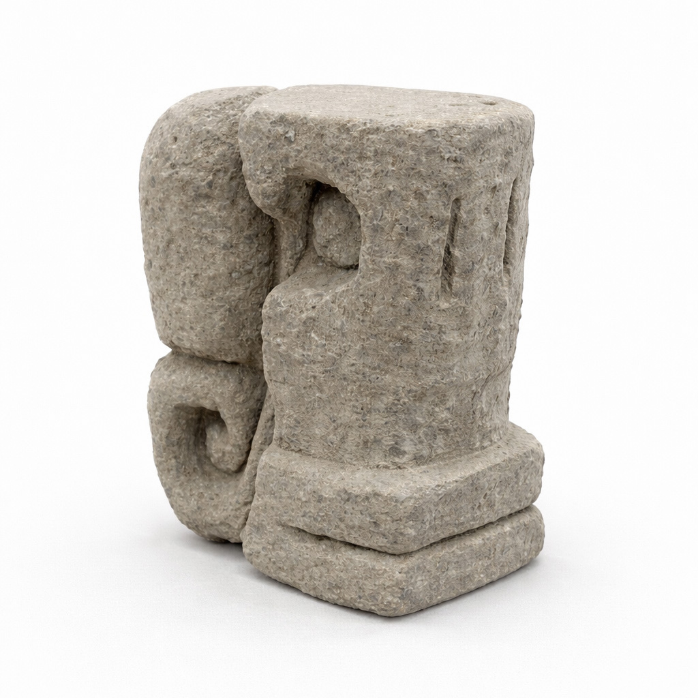

Case Study · Objects · 2025
Remnants
Remnants abstracts the human face through geometric compression, drawing from the monumental and mask-like qualities of Mesoamerican stone carving. I started with a cast block of vermiculite and cement that I carved directly by hand, letting the form reveal itself through subtraction.


Project Overview
Facial features flatten into simplified planes, recessed circles, and stacked forms—less a portrait and more a symbol. The rough surface stays intentional. I wanted it to feel unearthed, like something pulled from the ground rather than made in a studio. Through this process, the work becomes a way of reconnecting with ancestral traditions while filtering their visual language through my own hand.